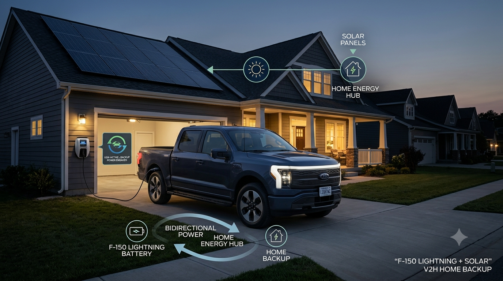

EV HUB · SOLAR + HOME BACKUP
Ford F-150 Lightning Solar Integration: Power Your EV & Home During Outages
The Ford F-150 Lightning is more than an electric pickup. With the right home equipment, its large battery can become part of a home energy system—charging from the grid or solar and, during an outage, helping supply backup power to the house.

Why the F-150 Lightning Is Interesting for Solar Owners
For a homeowner already considering solar panels and battery storage, an EV with bidirectional charging changes the conversation. Instead of thinking about the pickup only as a vehicle load, you can also plan around its battery as a temporary energy resource. The key is that this is a complete electrical system, not simply plugging an extension cord into the truck.
How F-150 Lightning V2H Backup Works
V2H means Vehicle-to-Home. During normal operation, solar power can serve household loads and charge the truck. When the utility grid goes down, compatible Ford home-backup equipment can isolate the house from the grid and allow the truck to provide power to supported home circuits.
Ford Charge Station Pro and Home Integration
The Ford Charge Station Pro is the high-power home charging component associated with the F-150 Lightning's bidirectional energy system. The complete setup can include the appropriate Home Integration System and electrical work so that backup power can safely flow to the home while the house is isolated from the utility grid.
| System component | What it does |
|---|---|
| F-150 Lightning | Stores energy in the vehicle battery and can supply energy through a compatible bidirectional setup. |
| Charge Station Pro | Provides high-power AC charging and forms part of the compatible bidirectional charging ecosystem. |
| Home Integration System | Provides the electrical interface and grid-isolation function needed for home backup. |
| Solar inverter | Converts rooftop solar electricity into usable household/charging power. |
| Electrical panel | Distributes power to selected household circuits or the home according to the installed backup design. |
Can Solar Panels Charge the F-150 Lightning?
Yes. Solar panels can supply electricity for EV charging when the home's electrical system and charger are designed appropriately. The practical question is how much daily solar energy is available after the house uses its own electricity.
For SolarRateHub planning, a 630W solar panel is a useful reference. Six panels represent about 3.78 kW of nameplate capacity, eight panels about 5.04 kW, ten panels about 6.30 kW, and twelve panels about 7.56 kW.
| 630W panels | Approx. solar capacity | Typical planning use |
|---|---|---|
| 6 | 3.78 kW | Smaller EV charging contribution |
| 8 | 5.04 kW | Moderate daytime charging |
| 10 | 6.30 kW | Stronger EV + household solar setup |
| 12 | 7.56 kW | Higher daily energy production potential |
| 16 | 10.08 kW | Large EV + home energy system |
These are nameplate capacities, not guaranteed daily production. Actual output depends on location, season, roof direction, shading, temperature, inverter efficiency and system losses.
Solar + EV + Home Backup: A Practical Architecture
A well-designed system can follow this energy path:
Outage → F-150 Lightning Battery → Home Backup Equipment → Supported Home Loads
Adding a stationary solar battery can provide another layer of flexibility. The battery can handle shorter-duration loads or solar shifting, while the truck can provide additional stored energy when the vehicle is available and the system is designed to use it.
How Long Could the F-150 Lightning Power a Home?
There is no single answer because home consumption varies dramatically. A refrigerator, Wi-Fi, lights, phone charging and a few essential circuits use far less energy than central air conditioning, electric water heating, cooking and a whole-home electric load.
| Example average backup load | Approx. energy for 10 hours | Planning takeaway |
|---|---|---|
| 0.5 kW | 5 kWh | Very light essential-load setup |
| 1 kW | 10 kWh | Basic essential loads |
| 2 kW | 20 kWh | More appliances running |
| 3 kW | 30 kWh | Heavy essential-load scenario |
| 5 kW | 50 kWh | High consumption; runtime falls quickly |
The table is simple energy math, not a promise of vehicle runtime. Real usable energy is affected by the truck's battery state of charge, vehicle reserve requirements, conversion losses and the home's actual load profile.
Should You Add a Solar Battery Too?
For households that want resilience, a stationary battery can complement the F-150 Lightning rather than compete with it. The solar battery can automatically support loads and shift solar energy, while the EV remains available for driving and can provide a much larger temporary energy reserve when the V2H system is available.
Solar battery may make more sense when:
- You want backup power even when the truck is away.
- You want automatic daily solar energy shifting.
- You want to preserve the truck's charge for driving.
- Your home has frequent short outages.
F-150 Lightning V2H becomes especially interesting when:
- The truck is normally parked at home during outage-prone periods.
- You want a larger mobile energy reserve.
- You already need a large EV battery for transportation.
- You want to combine EV charging and home resilience in one energy strategy.
F-150 Lightning vs a Traditional Gas Generator
A gasoline generator is dedicated backup equipment. The F-150 Lightning is already an EV, so the energy storage is part of a vehicle you use every day. That can make the system attractive to EV owners, but it also means the truck must have enough charge when an outage occurs.
| Feature | F-150 Lightning V2H | Gas generator |
|---|---|---|
| Daily transportation | Yes | No |
| Fuel source | Electricity / solar-compatible home system | Gasoline |
| Backup energy storage | Large vehicle battery | Fuel tank + generator |
| Solar integration | Can be part of an integrated solar/home system | Usually separate |
| Local emissions while operating | No tailpipe emissions | Produces exhaust |
| Key limitation | Vehicle availability and compatible equipment | Fuel supply, noise and maintenance |
How to Size Solar for an F-150 Lightning
Start with your daily driving miles rather than the truck's entire battery capacity. Estimate EV energy use, add your household electricity needs, then size the solar array around the usable sunlight at your location.
Daily solar energy target ≈ home electricity + EV charging energy + system losses
For example, if your driving requires 30 kWh on a particular day and the home uses another 20 kWh, the system needs to produce substantially more than 50 kWh of solar energy to cover both loads once charging and conversion losses are considered. A local installer should model the actual roof and utility interconnection.
What Happens During a Power Outage?
- The utility grid experiences an outage.
- The properly installed backup system detects the outage and isolates the home from the grid.
- The F-150 Lightning can provide energy through the compatible bidirectional equipment.
- Solar generation can continue to contribute when the system supports the required operating conditions.
- Home energy management determines which loads can remain powered.
The exact behavior depends on the installed equipment, configuration, utility requirements and solar inverter design. Never assume that a rooftop solar system will keep operating during an outage unless the installed system is specifically designed for backup operation.
Frequently Asked Questions
Can the Ford F-150 Lightning power a house?
With compatible bidirectional charging and home-integration equipment, the F-150 Lightning can be used as a home backup energy source. The exact loads and duration depend on the installed system and household consumption.
Can I charge an F-150 Lightning using rooftop solar?
Yes. A properly designed home solar system can provide energy for EV charging. The amount of charging that can be supplied directly from solar depends on solar production and household demand.
What is V2H?
V2H means Vehicle-to-Home. It describes a system where an EV battery can send electrical energy back to a compatible home electrical system.
Do I need a solar battery if I have an F-150 Lightning?
Not necessarily. A solar battery can still be useful for automatic daily energy shifting and backup when the truck is unavailable. The best choice depends on outage frequency, driving needs, solar production and budget.
Can I connect the truck directly to my breaker panel?
No. A home backup installation requires the appropriate bidirectional charging and electrical isolation equipment. Direct improvised connections can be dangerous.
Final Takeaway
The F-150 Lightning makes an interesting case for combining EV ownership with solar and home resilience. The strongest setup is not simply “truck + solar panels”; it is a coordinated system involving the vehicle, compatible charging hardware, home integration equipment, solar generation and a properly designed electrical panel.
For homeowners in outage-prone areas, that combination can turn the EV battery into another part of the home's energy strategy—while solar can help replenish energy during normal operation.
Keywords covered naturally: Ford F-150 Lightning solar integration, F-150 Lightning solar charging, Ford Charge Station Pro, F-150 Lightning V2H, vehicle-to-home, home backup power, solar battery backup, F-150 Lightning power outage, EV solar charging, bidirectional EV charging, solar panels for F-150 Lightning, Ford Intelligent Backup Power.